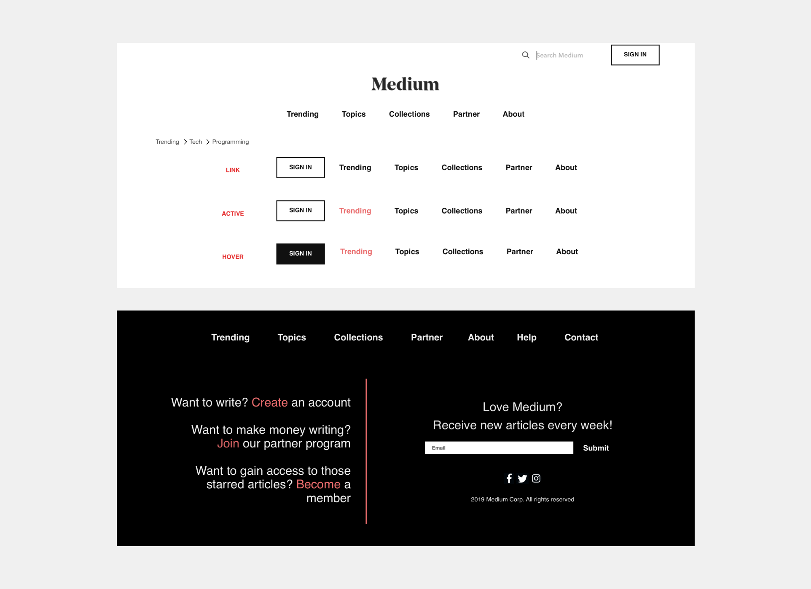
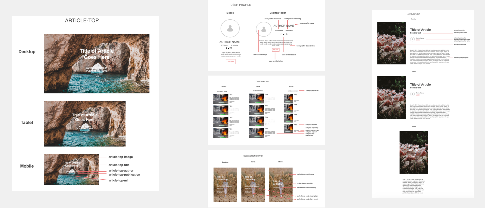

Medium
Website Redesign Concept
Overview
Medium is a social content sharing and publishing platform. Founded by one of the co-founders of Twitter, Evan Williams describes Medium as “a place for ideas that are longer than 500 characters.” Medium champions a unique no ad subscription model in which writers are paid based on engagement. Spreading awareness of this model is the focus of this redesign concept.
My Role
SWOT Analysis, Compeitive Analysis, Branding, Wireframes, Component Development, Website Development, Responsive Mobile & Tablet
Objectives
Grow participation in Medium’s Partner Program and Membership Subscription. To accomplish this goal, I identified 3 objectives:
- Grow Medium’s Paid Membership reader base
- Grow profits of writers in the Medium Program
- Increase the quality of Medium’s content, and encourage the spread of ideas and engagement site’s content
No Ad Subscription Model
Medium Paid Membership
Members pay a $5 monthly fee to gain unlimited access to all of Medium’s articles. This fee is distributed to the writers based on the amount of articles that the member "claps" (comparable to a "like"). For example, if a member claps for one article that month, the writer of that article receives the full $5.
Medium Partner Program
Free to join, writers submit their work and get compensated when members from Medium's paid Membership "clap" their articles. Medium is doing away with the outdated ad payment model, and paying writers based on the quality of their ideas.
SWOT Analysis
Strengths
- Encourages “social journalism” which connects professional journalism and user generated content
- Partner Program pays writers for their work based on engagement from members
- Access to a wide range of interests and writers from around the world
Weaknesses
- Hard to find information about Partner Program and Membership, because they are separate links and hard to locate
- Layout disrupts the user experience
- Images are to the right of the title. Visuals are the first thing that users notice - right sided images disrupt one's tendency to scan from left to right.
Opportunities
- Take advantage of the increasing amount of the 50+ age demographic that are using social media
- Give option to increase text size and make it handicap accessible
- Use of mobile devices to receive news continues to increase
- Medium was founded by a co-founder of Twitter as a place where one can write more than 140 characters. Integrate Medium and Twitter more.
- Give option to link Twitter account with medium so the user’s Twitter name is attached to the article when shared
Threats
- People are growing weary of trusting news found on social media
- Show that medium is not another Twitter or Facebook, but a platform targeted at facilitating the production of high quality content. To this by growing amount of paid writers who have the incentive to produce high quality work.
- Website building platforms like Wordpress and Squarespace are heavily advertised and becoming more and more popular
- Advertise as a blog space with an existing audience of millions.
- Social journalism is a new concept and not accepted by some in the Journalism field
Sitemap

Branding
Wireframes
Header Wireframe
The current navigation features 9 different categories and 11 links. I condensed the amount of links to 5. The trending page will feature popular articles in the major categories, and these categories can be selected by the user if they are logged into an account. Topics will feature all the different categories with a search feature for easy access. Collections is a specific feature within Medium in which users can make a publication and collaborate with other writers. Partner will explain Medium's Partner Program and memembership fees. About explains Medium's mission and goals. Currently this link is located at the bottom, but I included it in the primary navigation for easier access.
Footer Wireframe
The tertiary navigation includes the primary navigation and Help and Contact links. The subscription form serves to encourages more readers every month and to increases enagement with featured content. The goal is to convert these readers to paid members. The links to social media are intended to increase engagement with Medium across all platforms, which fits with the profile of the target audience because they are technically competent and heavy on social media usage. The call to action contains action verbs which link to ways that the user can get involved, either as a writer or reader or both. This is included to reach the goal of gaining more readers and more quality content.
BEM Components
I utilized the BEM system to identity patterns in the design and translated these patterns into reusable components. The components below make the code clean, readable, and reusable. I included the naming conventions and created responsive designs for both tablet and mobile.
